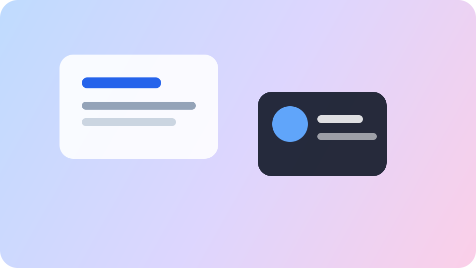

Кнопки и формы
Поддерживаются размеры, состояния hover, active, focus, disabled и валидационные сообщения.
UI Kit включает адаптивные компоненты Button, Input, Dropdown, Checkbox, Radio, Card и Navbar. Стили разделены по структуре CSS и оформлены по методологии БЭМ.
Набор готовых блоков можно переиспользовать в финальном проекте и расширять модификаторами.

Поддерживаются размеры, состояния hover, active, focus, disabled и валидационные сообщения.
На десктопе меню горизонтальное, на мобильных устройствах раскрывается через hamburger toggle.
Grid и Flexbox помогают выстраивать адаптивные галереи, панели документации и группы действий.